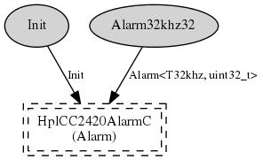

Component: AlarmMultiplexC
configuration AlarmMultiplexC
A component that multiplexes the use of an alarm. The assumption is
that its use is mutually exclusive and users check whether the
events are for them.
- Author:
-
Jonathan Hui <jhui@archrock.com>
- Version:
-
$Revision: 1.1 $ $Date: 2007-07-04 00:37:14 $
Provides
interface
Alarm<T32khz, uint32_t> as
Alarm32khz32Wiring
